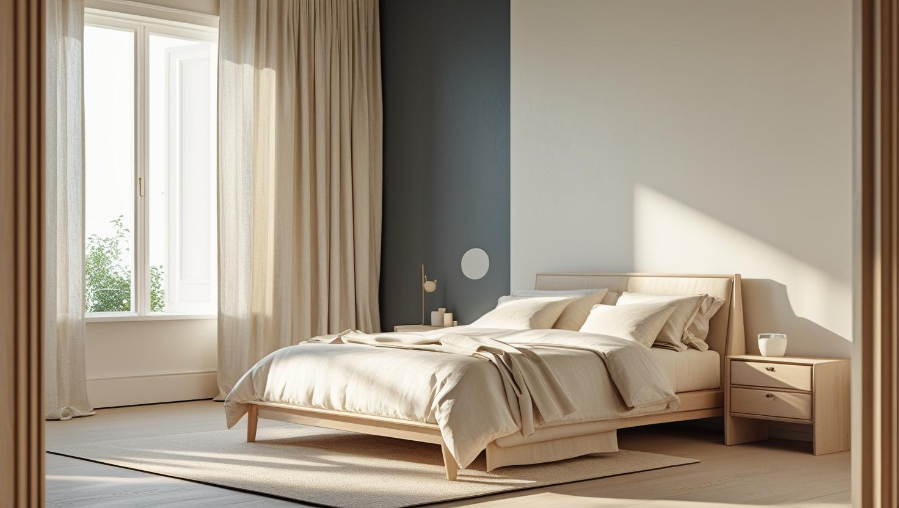
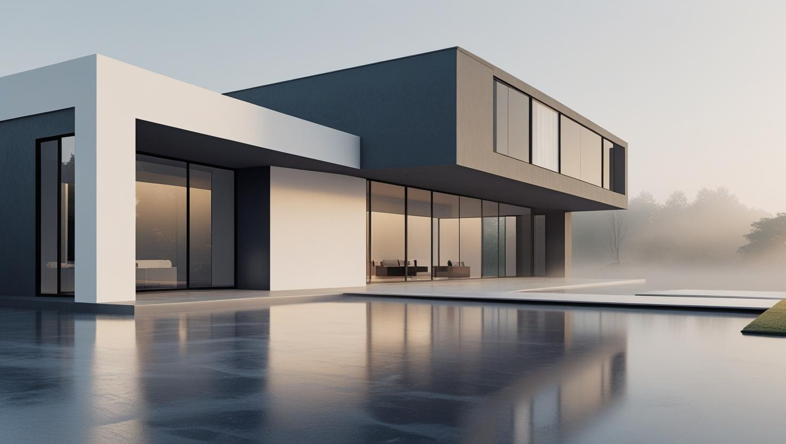
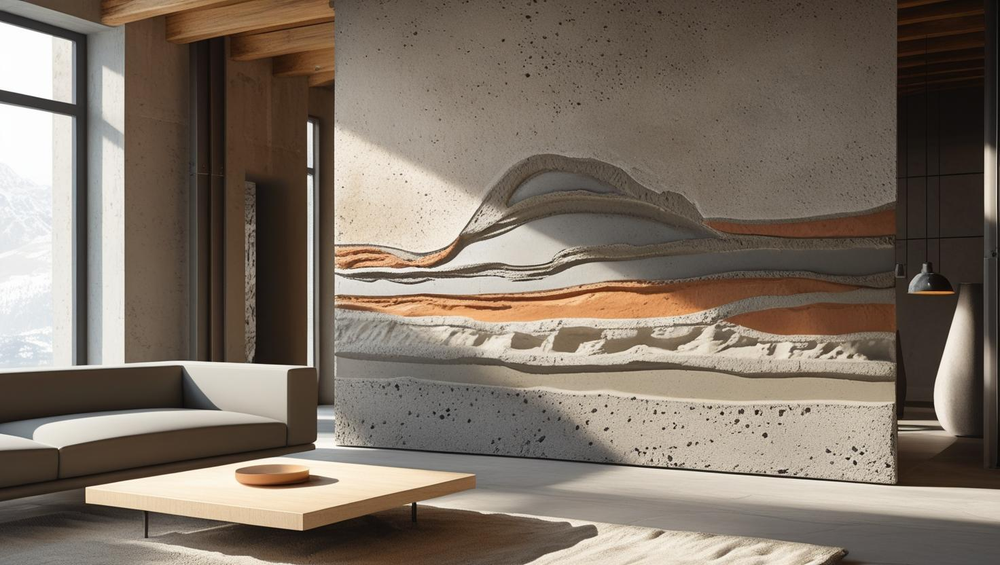

İstanbul Bakırköy Profesyonel Boya Ustası
Ataköy'deki site dairelerinden Yeşilköy ve Florya'nın bahçeli evlerine, Bakırköy merkezindeki ofis ve dükkânlara kadar iç ve dış cephe boyası yapıyoruz. 20 yıllık tecrübemizle ücretsiz keşfin ardından yazılı teklif veriyoruz.
Bakırköy'de Boya Badana: Yerleşik Konut Dokusu ve Sahil Nemi
Bakırköy boyacı talebi ilçenin yerleşik ve görece istikrarlı yapı dokusundan geliyor. Ataköy, Yeşilköy ve merkez çevresinde uzun süredir yerinde duran apartman ve site stoğu bulunuyor.
Bu yapı tipinde en sık karşılaştığımız kalemler üst üste binmiş eski boya katmanları, tavan kenarı dökülmeleri ve ıslak hacim çevresindeki nem izleri. Marmara kıyısına yakın konum, alt katlarda ve kuzeye bakan odalarda yoğuşma eğilimini artırabiliyor.
İlçede ayrıca dükkân ve ofis işleri talep ediliyor. Bakırköy boya ustası ve Bakırköy boya badana işlerinde eşyalı çalışma standart uygulamamız.
Hizmetlerimiz

İç Mekan Boyama
Bakırköy'de iç mekan boyasını oturulan, eşyalı dairelerde de uyguluyoruz. Ataköy sitelerinde çalışma saatleri yönetimin kurallarına göre planlanır; merkezdeki eski apartmanlarda sıva onarımının kapsamı keşifte belirlenir.
- Oturulan dairede eşya koruma
- Tavan kenarı ve sıva tamiri
- Islak hacimde silinebilir boya
- Kapı ve kartonpiyer boyama

Dış Cephe Boyama
Denize yakın cepheler tuzlu rüzgârı, güneşi ve yağışı birlikte alır; bu yüzden Bakırköy'de dış cephe boyasına eski katmanın sağlamlığı ve çatlaklar kontrol edilerek başlanır. Müstakil evde, az katlı apartmanda ya da yüksek blokta erişim yöntemi ve boya sistemi keşifte seçilir.
- Cephe yıkama ve gevşek boya temizliği
- Çatlak ve derz onarımı
- Dış cepheye uygun astar ve son kat
- Bahçe duvarı ve saçak altı boyası

Dekoratif Boyama
Dekoratif boyayı salonda ya da antrede tek bir vurgu duvarı olarak planlıyoruz. Gün boyu ışık alan, denize bakan odalarda parlaklık derecesi ve renk tonu, küçük bir örnek yüzeyde gün ışığında görülerek seçilmelidir.
- Salon ve antrede vurgu duvarı
- Mat, ipek mat ve saten seçenekleri
- Doğal ışığa göre ton seçimi
- Taş ve tuğla efektli uygulamalar
Fiyat Tablosu
| Hizmet Türü | Metrekare Fiyatı | Ortalama Süre (100m²) | Garanti |
|---|---|---|---|
| İç Cephe Boyama | 100-200 TL | 2-3 Gün | Uygulama kapsamına göre |
| Dış Cephe Boyama | 180-280 TL | 3-5 Gün | Uygulama kapsamına göre |
| Dekoratif Boyama | 250-500 TL | 4-7 Gün | Uygulama kapsamına göre |
| Ofis Boyama | 150-250 TL | 2-4 Gün | Uygulama kapsamına göre |
Metrekare fiyatları yaklaşık ön değerlendirme aralığıdır. Uygulanacak ölçüm yöntemi, boyanacak alanın kapsamı, yüzey durumu, tamirat ihtiyacı, kat sayısı ve malzeme seçimi keşif sırasında netleştirilir.
Dış cephe boya fiyatları uygulama alanı için yaklaşık 180–280 TL/m² aralığındadır. Kesin hesaplama yöntemi ve teklif; yüzey durumu, bina yüksekliği, erişim veya iskele ihtiyacı, tamirat kapsamı, boya sistemi ve uygulanacak kat sayısına göre keşif sırasında netleştirilir.
Uygulama kapsamına göre işçilik garantisi sağlanır. Garanti kapsamı ve istisnaları teklif veya iş sözleşmesinde belirtilir.
Bu rakamlar İstanbul Boyacılık'ın 2026 gösterge fiyat aralığıdır. Bir piyasa ortalaması değildir. Kesin fiyat; yüzey durumu, hazırlık ve tamirat miktarı, uygulanacak kat sayısı, seçilen malzeme sınıfı, ulaşım ve kat koşulları ile evin eşyalı mı boş mu olduğu keşifte görüldükten sonra belirlenir.
Bakırköy'de aralığı yukarı taşıyan kalemler üst üste binmiş eski katmanların raspası ve nem gören yüzeylerde çıkan onarım ile ek astar ihtiyacı. Yüzeyi sağlam ve yakın zamanda boyanmış dairelerde iş aralığın altında kalabiliyor.
Ataköy Sitelerinde Daire Boyatırken Yönetim Kuralları ve İş Planı
Ataköy'deki sitelerde daire boyası, işin kendisi kadar site yönetiminin kurallarına göre planlanır. Çalışma saatleri, malzeme girişi ve asansör kullanımı keşiften önce netleşirse iş aksamadan ilerler.
Kısımlara ayrılmış Ataköy'de her sitenin kendi yönetimi ve kuralları olabilir; yan yana iki sitede bile uygulama farklı çıkabilir. Bu yüzden keşif gününden önce yönetimden şu bilgileri almanızı öneriyoruz:
- Tadilat ve boya işine izin verilen gün ve saatler
- Ekip ve malzeme girişinin nasıl bildirileceği
- Asansör kabininin korunması ya da yük asansörü şartı
- Araç yanaşma ve kısa süreli park imkânı
- Boya kovası, örtü ve atıkların nasıl çıkarılacağı
İzin verilen saatler kısaysa iş daha fazla güne yayılır; bunu teklifte açıkça yazıyoruz. Balkon dış yüzü, cephe ve ortak koridor gibi alanlarda renk ve uygulama kararı daire sahibine değil, genellikle yönetim planına ve yönetimin onayına bağlıdır.
Yeşilköy, Yeşilyurt ve Florya'da Denize Yakın Evlerin Dış Cephesi
Sahile yakın bahçeli evlerde dış cephe boyasının ömrünü renkten çok yüzey hazırlığı ve doğru boya sistemi belirler. Deniz rüzgârının taşıdığı tuz ve nem, bakımı gecikmiş bir cephede boyanın tebeşirlenmesini ve kabarmasını hızlandırabilir.
Keşifte cephenin hangi yöne baktığına, saçak ve denizlik altlarında su izi olup olmadığına ve eski boyanın ele toz bırakıp bırakmadığına bakıyoruz. Gevşek katman temizlenmeden ve çatlaklar kapatılmadan yapılan uygulamada yeni boya, altındaki zayıf katmanla birlikte dökülebilir. Ahşap pencere, kapı ya da pergola gibi yüzeyler varsa bunlar ayrı bir kalem olarak ele alınır.
Müstakil evde karar ev sahibine aittir. Az katlı bir apartmanda ise cephe bütün kat maliklerini ilgilendirdiği için boya kararı genellikle ortak toplantıda verilir. İskele kaldırıma taşacaksa ilgili belediyeden izin alınması gerekip gerekmediği işin başında sorulmalıdır.
Bakırköy'de Dekoratif Boya mı, Plastik Boya mı?
Duvarların büyük bölümünde su bazlı plastik boya yeterlidir; dekoratif boya ise salonda ya da antrede öne çıkarılmak istenen tek bir yüzeyde anlam kazanır. Seçimi odanın ışığı, yüzeyin düzgünlüğü ve silinebilirlik ihtiyacı belirler.
Gün boyu ışık alan salonlarda parlak yüzeyler duvardaki küçük dalgalanmaları daha görünür kılar; bu odalarda mat ya da ipek mat bir boya genellikle daha düzgün görünür. Çocuk odası, koridor ve mutfak gibi sık dokunulan yerlerde silinebilir ürün seçmek bakımı kolaylaştırır. Ürünler arasındaki farkları plastik boya ile silikonlu boya farkını anlatan rehberimizde ayrıntılı bulabilirsiniz.
Taş ya da tuğla efekti gibi dekoratif uygulamalar daha fazla işçilik gerektirdiği için fiyat tablosunda iç cephe boyamadan ayrı ve daha yüksek bir aralıkta gösterilir. Aynı odada vurgu duvarı ile düz boyanın birlikte nasıl duracağını keşifte mobilya ve zemin rengine bakarak konuşuyoruz.
Bakırköy'de Ofis, Muayenehane ve Dükkân Boyama
Ofis boyamada asıl hedef, işin çalışma düzenini olabildiğince az bozmasıdır. Uygulamanın bölüm bölüm mü yoksa mesai dışında mı yapılacağı keşifte, iş yerinin saatlerine göre kararlaştırılır.
Apartman katında büro ya da muayenehane olarak kullanılan bir dairede, ortak girişi ve asansörü kullanan komşuların düzeni de hesaba katılır. Bekleme alanı, odalar ve toplantı salonu sırayla boyanarak iş yerinin tamamen kapanmasına gerek kalmayabilir; dosya dolabı, cihaz ve bilgisayar gibi taşınması zor eşyalar yerinde örtülür.
Cadde üzerindeki dükkânlarda vitrin, tezgâh ve raflar korunur; kokusu daha az olan su bazlı ürünler açılıştan önce havalandırmayı kolaylaştırır. Renk seçimini çalışanların odaklanması açısından da düşünüyorsanız ofiste verimliliği artıran renkler yazımıza göz atabilirsiniz.
Bakırköy Boya Badana Teklifinde Fiyatı Değiştiren Yerel Kalemler
Bakırköy'de boya badana ustası ararken aynı metrekaredeki iki dairenin teklifinin farklı çıkması şaşırtabilir; fark çoğunlukla binaya erişimden ve çalışma koşullarından gelir. Rakamlar için sayfadaki fiyat tablosunu çıkış noktası kabul edip aşağıdaki kalemleri keşifte birlikte netleştiriyoruz.
- Site kuralları: Kısa tutulan çalışma saatleri işin kaç güne yayılacağını belirler.
- Erişim: Asansörsüz üst kat, aracın yanaşamadığı sokak ya da uzak otopark malzeme taşımayı uzatır.
- Cephe yüksekliği: İskele ihtiyacı ve denize dönük yüzdeki yıpranma tamirat kapsamını değiştirir.
- Eşya durumu: Eşyalı dairede toplama ve örtme işi, boş daireye göre ek zaman ister.
- Yüzey seçimi: Düz plastik boya ile silinebilir ürün arasındaki malzeme farkı ve dekoratif uygulamanın ek işçiliği teklife yansır.
Bu kalemlerin genel maliyet mantığını 2026 boya badana fiyatları yazımızda da görebilirsiniz. İlçe dışındaki adresleriniz için de İstanbul genelinde boya badana ekibi görevlendirebiliyoruz.
Bakırköy’de Hizmet Verdiğimiz Mahalleler
Bakırköy boyacı ustası olarak Ataköy'ün kısımlarını, Yeşilköy ile Yeşilyurt'u ve ilçe merkezini kapsayan şu mahallelerde keşif yapıyoruz:
Bakırköy Mahalleleri
- Bakırköy Ataköy 1. Kısım
- Bakırköy Ataköy 2-5-6. Kısım
- Bakırköy Ataköy 3-4-11. Kısım
- Bakırköy Ataköy 7-8-9-10. Kısım
- Bakırköy Basınköy
- Bakırköy Cevizlik
- Bakırköy Kartaltepe
- Bakırköy Osmaniye
- Bakırköy Sakızağacı
- Bakırköy Şenlikköy
- Bakırköy Yenimahalle
- Bakırköy Yeşilköy
- Bakırköy Yeşilyurt
- Bakırköy Zeytinlik
- Bakırköy Zuhuratbaba
Bakırköy Boyacılık Müşteri Yorumları
"Bakırköy'de evimi boyattım, sonuç beklediğimden çok daha iyi oldu. Usta ekip çok titizdi, her detaya dikkat ettiler. Kesinlikle tavsiye ederim."
Ali Demir
Ataköy / Bakırköy
"Ofisimizin duvarlarını yenilettik, işçilik ve zamanlama mükemmeldi. Uygun fiyat ve samimi hizmet için teşekkürler."
Burcu Yılmaz
Şenlikköy / Bakırköy
"Boyacı ustası ararken şüphelerim vardı, ama Bakırköy İstanbul Boyacılık ekibi işin hakkını verdi. Hem temiz çalıştılar hem de uygun fiyat sundular."
Emine Kılıç
Yeşilköy / Bakırköy
Faydalı Bağlantılar
Bakırköy boya badana planında fiyat hesabı, boya markası ve yakın ilçe seçeneklerini birlikte değerlendirmek için aşağıdaki rehberler kullanılabilir.
Bakırköy Boyacı Ustası — Sık Sorulan Sorular
Ataköy'deki sitede daire boyatmak için yönetime haber vermek gerekir mi?
Genellikle evet. Tadilat saatleri, ekip ve malzeme girişi ile asansör kullanımı site yönetiminin kurallarına bağlıdır. Dairenin içi ile ortak alanlar ayrı değerlendirilir; balkon dış yüzü veya cephe gibi yüzeylerde yönetim planına göre ayrıca onay aranır.
Sahile yakın dairede nem sorunu boyayla çözülür mü?
Boya tek başına çözmez. Yoğuşma, dışarıdan su alma ve tesisat kaçağı farklı sorunlar; kaynak dururken uygulanan boya kısa sürede kabarıyor. Keşifte kaynağı değerlendirip önce çözülmesi gerekeni söylüyoruz.
Dekoratif boya ile plastik boya arasında nasıl seçim yapmalıyım?
Odanın genelinde su bazlı plastik boya yeterlidir; dekoratif boya ise salon veya antrede dikkat çekmesi istenen bir duvar için tercih edilir. Dekoratif uygulama daha çok işçilik istediğinden fiyat tablosunda ayrı bir satırda yer alır. Seçimi, odanın ışığını ve duvarın düzgünlüğünü keşifte görerek birlikte yapabiliriz.
Bakırköy'de ofis boyaması iş yerini kapatmadan yapılabilir mi?
Genellikle mümkündür. Odalar sırayla boyanabilir ya da çalışma akşam saatlerine veya hafta sonuna alınabilir; bilgisayar, cihaz ve dolaplar yerinde örtülür. Hangi düzenin seçileceği, iş yerinin çalışma saatleri öğrenildikten sonra keşifte netleşir.
Kaç kat boya uygulanıyor?
Yüzeyin rengi, emiciliği ve seçilen yeni renk belirliyor. Açıktan açığa geçişte genellikle iki kat yeterli; koyu rengin üstünü açık renkle kapatmak fazladan kat ya da kapatıcı astar gerektirebiliyor. Bunu keşifte görüp teklife yazıyoruz.
Eşyalı evde çalışırken zemin zarar görür mü?
Zemin, süpürgelik ve sabit yüzeyler örtülüp maskeleniyor; eşyalar oda düzenine göre toplanıp kapatılıyor. İş sonunda örtüler kaldırılıp temizlik yapılıyor ve iş birlikte kontrol ediliyor.
İletişim
İletişim Bilgileri
Telefon: 0507 832 29 12
E-posta: boyaustamistanbul@gmail.com
10+ Uzman Ustamızla Bakırköy ve çevresine hizmet veriyoruz.
Çalışma Saatleri: 7/24 (Pzt-Paz 00:00-23:59)